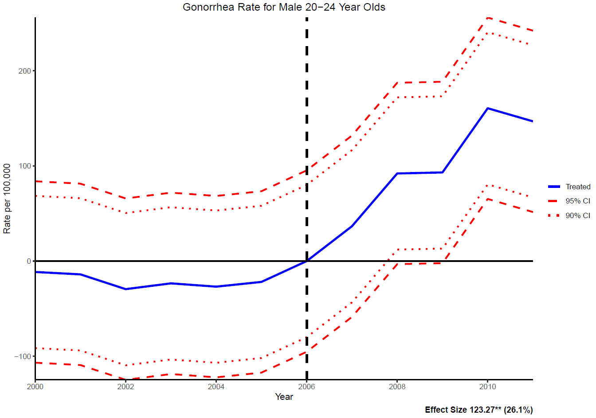

Research
Job Market Paper
In 2007, Texas enacted legislation that removed condoms from the list of products exempt from the state sales tax, effectively increasing the price of safe sex. Condoms are commonly used to prevent sexually transmitted infections (STIs), making this policy a useful setting for examining how the cost of protection influences sexual health outcomes. Using a synthetic difference-in-differences approach, this paper examines the effects of the policy on STI rates among young adults in Texas. I find statistically significant increases in gonorrhea rates among individuals aged 20–24, with estimated increases of 20% for women and 26% for men relative to their respective pretreatment means. These findings suggest that increases in the cost of protection can have meaningful consequences for sexual health.
